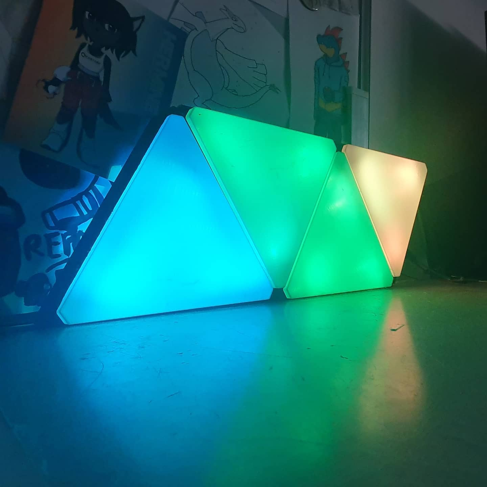

Mon objectif en réalisant ce projet était de réaliser
une lampe pour mon bureau dont le style serait inspiré de Nanoleaf,
une marque produisant des panneaux en forme d'hexagones RGB. J'ai donc décidé
de fabriquer ma propre version. Ce projet est contrôlé par un Arduino Uno
programmé en C++ via l'IDE officiel de arduino. J'ai utilisé un module HC-06
pour offrir une connection bluetooth au projet. Ce projet m'aura permis de m'améliorer
en électronique tout en me permettant de tester de nouveaux supports sur lesquels developper.
Le boitier aura été imprimé en 3D avec mon imprimante 3D, ce qui me permettra de rajouter des
panneaux si je le désire.

Mes panneaux de leds
Comme dit précédemment, ce projet est contrôlé par un Arduino Uno et un module bluetooth hc-06 que j'avais sous la main. Le tout a été programmé en C++. Le controleur vérifie si un message est reçu par le module bluetooth, si un message est reçu, il passe sur le mode qui correspond. J'ai choisi d'utiliser un arduino car j'en avais un qui était libre, mais je pense qu'utiliser un esp32 aurait pu être plus adapté pour un projet qui touche à l'IOT. En effet, celui-ci propose une connection wifi et bluetooth nativement, est plus petit et propose plus de mémoire. Pour envoyer les messages bluetooth au controleur, j'ai fait une application de test avec le MIT app inventor, qui permet de faire une application rapidement en connectant des blocs ensemble. C'est loin d'être optimal, mais correspond à mes attentes. Je pense essayer de refaire une version de cette application un peu plus tard, étant donné que j'ai pour objectif d'essayer d'apprendre le développement Android, notamment avec Kotlin ou Java.
Ce projet est en réalité surtout axé sur l'electronique, étant donné de la simplicité du programme utilisé. Cependant ce fût assez intéréssant pour moi à réaliser. Ce projet possède encore quelques axes d'améliorations, comme passer sur un esp32, faire des PCB personnalisés pour organiser le tout et refaire une application à la main.